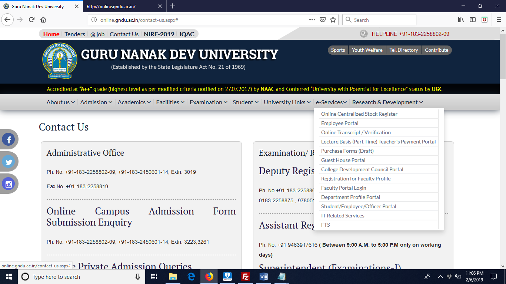

Guru Nanak Dev University
Guru Nanak Dev University was established at Amritsar on November 24, 1969 to mark the 500th birth anniversary of Sri Guru Nanak Dev Ji. It is both a residential and an affiliating university. In conceiving the future course of the University, the objectives enshrined in the Guru Nanak Dev University Act 1969, emphasised that the new University would make provision for imparting education and promoting research in the humanities, learned professions, sciences, especially of applied nature and technology
The motto of the University as engraved on its emblem Guru's wisdom illumines all speaks of the vision and idealism for which the University stands. Spread over a stretch of 500 acres towards the west of the City, Guru Nanak Dev University presents a picture of modern architecture. Traditional red brick geometrical blocks represent its regard for time-honoured values and commitment to scientific advancement. Making its humble beginning in an annexe of the adjoining Khalsa College, the University today boasts of 35 academic departments at the University Campus and 148 affiliated colleges and 71 Associate Institutes, most are situated in the rural areas, but a large area is still beyond the reach of the rural poor. It has been the effort of the University to be proactive in its reach to the rural masses. Starting of Rural Colleges in Chung, Mithra, Verka, Narot Jaimal Singh and Patti under the Punjab Govt./UGC scheme at a cost of Rs. 1.5 Crore for each college; and two Regional Campuses - one at Sathiala (with cost of Rs. 9 Crore for the Centre and 5 Crore for Hostel) and Fattu Dhinga (Sultanpur Lodhi), Distt. Kapurthala. Introduction of New professional courses in Shaheed Ram Singh Pathania Memorial University College, Niari, the constituent college of the University. All this shows the concern of the University for the upliftment of rural backward areas
Top
Navigation and Structures
 Responsive Navigation and Structure:
This website is built with advanced features and a lot information is in this website. The way it’s structured pretty good but it could be little better. If we talk about Navigation for this site it is effective. Menu links are very clear and links have labels of the webpages so easy to navigate. But there are so many links and specially pictures and links of news make home page crowdy. Menu links make sense but news, latest results etc. if users can find all this information from the menu then why on home page. If site has limited information on home page it makes website looks more professional.
Responsive Navigation and Structure:
This website is built with advanced features and a lot information is in this website. The way it’s structured pretty good but it could be little better. If we talk about Navigation for this site it is effective. Menu links are very clear and links have labels of the webpages so easy to navigate. But there are so many links and specially pictures and links of news make home page crowdy. Menu links make sense but news, latest results etc. if users can find all this information from the menu then why on home page. If site has limited information on home page it makes website looks more professional.
Top
Design
Website’s design while changing the screen size giving the display with changes of rows and columns. Bootstrap, media queries are used in this website design. When screen size is equal to tablet then menu links go to the right corners in the form of list and when size changes to cell phone size it has the button link that has all the links of menu like drop down list of Menu.
Top
Content
Website has way more than Content it needs on home page, some of the information is in the menu links but still displays on the home page to show off how good the university is doing. I think if website has that much content and repeating same contents make things confusing, they can use grid view to display things that university achieved.
Top
Interactivity

This University website has e-Services, it has many links for students and staff members and Admission has links to fill the forms for admission. All links are easy to use.
Top
Improvements
Using limited data on the home page and not repeating same thing on the website. Pictures with news headline, doesn’t make sense picture should be on the next page with full news not with the headline on home page.
Top